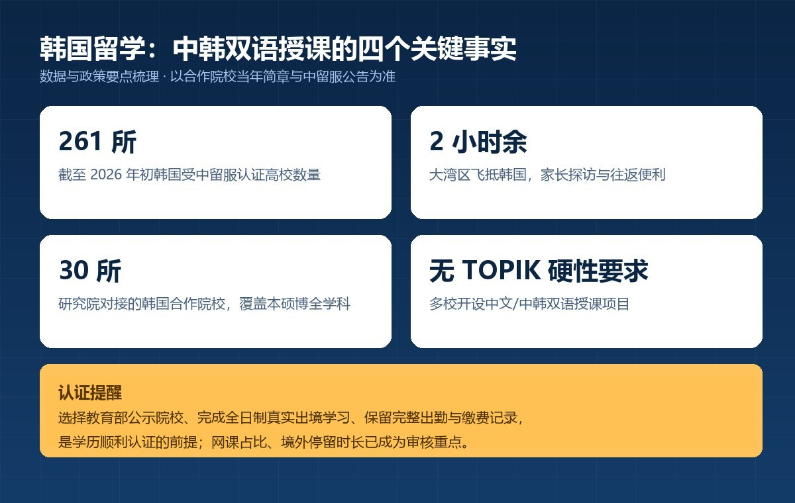

一组公开数据正在改写韩国留学的传统叙事：截至 2026 年初，中国教育部留学服务中心认证的韩国高校约 261 所；多所韩国大学开设中文授课或中韩双语授课项目，入学时不强制提交 TOPIK 韩语等级成绩；与此同时，中留服对境外学习时长、网课占比与材料真实性的审核明显收紧。 语言门槛下降、合规门槛上升，正成为这一方向最直观的变化。
把这些变化放进国际教育板块的实际业务里看，韩国留学正在从"能不能去"转向"去得是否正规、能不能认证、学了什么专业"。对国内院校和学生而言，选择标准也随之改变。

一、事实层面：三件事同时发生
第一件事是双语授课项目的扩张。所谓中韩双语授课，通常指专业课以中文讲授、配以韩语翻译或字幕的全日制正规课程，与纯韩语授课、纯英文授课并列，区别于函授、线上或非全日制课程。这类项目多见于硕士、博士阶段，部分本科也有开设；正规项目由高校在职教授授课，课程设置、学分要求与毕业标准和同校其他授课项目一致。
第二件事是认证名单的动态调整。公开信息显示，正规韩国大学所授学位可通过中留服认证，学位证书不标注授课语言；但 2026 年以来，认证审核更强调院校是否在公示名单内、学生是否真实出境、境外学习时长是否达标，2023 年后入学的纯网课占比超过一定比例将不予认证。这意味着"项目名字里有双语"本身不构成风险，风险在于项目是否正规、学习是否真实。
第三件事是成本与距离的既有优势仍在。韩国与粤港澳大湾区飞行时间约两小时余，学费与生活成本相对适中，多校提供覆盖较广的奖学金，学历受中国教育部认证。这些长期因素叠加语言门槛下降，使韩国成为本科升学与在职深造的高性价比选择。
二、现实做法：院校与学生各自在算什么账
从院校端看，中外合作办学与国际专本贯通正在成为常规工具。研究院国际教育板块对接韩国合作院校 30 所，均为中韩两国教育部门认可的正规高校，学科覆盖本科、硕士、博士全层次，并提供交换生、短期研学、寒暑假访学等多样化的交流项目。对国内院校而言，这类合作的价值不只是"送学生出去"，更是引入课程体系和学分互认设计，把国际化嵌进人才培养方案。
从学生端看，决策逻辑更趋务实。语言门槛降低后，申请者关注的重点转向三件事：学校是否在教育部公示院校名单内、学位能否顺利认证、专业是否对接就业。人工智能、经营、设计、传媒、教育、观光等专业因特色鲜明而受到关注；但同时也有提醒——中文授课项目在人文社科方向较集中，理工科选择相对有限，计划继续攻读博士的学生需要提前考虑语言衔接。
服务环节也随之细分。从升学规划、院校申请与材料辅导，到签证办理、接机安置、在读学业跟踪与学历认证辅导，全流程服务正在把"留学"从一次性申请变成持续数年的陪伴式支持。这也解释了为什么头部机构越来越强调院校资质核验与在读管理，而不只是录取通知书的数量。
三、趋势判断：未来三到五年会发生什么
其一，双语授课会从"卖点"回归"常规选项"。当越来越多院校开设中韩双语项目，语言便利不再是差异化优势，竞争焦点将转向课程质量、师资水平与专业实力。学生和家长会像挑选国内专业一样挑选海外项目，而不是只问"要不要考 TOPIK"。
其二，合规能力将成为机构的硬门槛。认证审核越细，机构在院校遴选、资质核验、学分互认、学习过程记录上的能力越重要。能提供完整的服务链条、并就政策变化及时给出提醒的机构，会比单纯做申请的中介更有生命力。这里的关键是"以合作院校当年简章与中留服公告为准"——任何承诺"包认证"的说法都不成立。
其三，国际教育会从"单一留学"走向"双向流动"。"引进来"的中外合作办学与"走出去"的留学服务将进一步打通：交换生、短期研学、师资海外研修与学历项目互相衔接，形成覆盖学生和教师两个群体的连续通道。对大湾区院校而言，靠近产业、靠近市场的专业设置，会让这种双向流动更容易落到就业上。
其四，专业选择与区域产业的耦合会更紧。当国际化人才培养规模扩大，能否对接人工智能、跨境电商、先进制造等区域产业需求，将决定留学归国后的实际竞争力。语言只是入口，专业与产业才是出口。
结语
韩国留学的变化，本质上是中国家庭和教育机构对"国际化"理解的变化：从追求一纸海外文凭，转向追求一所正规院校、一个能认证的课程、一条能对就业的专业路径。语言门槛下降之后，真正的竞争在合规与质量上——这对学生是保护，对机构是考验。